The contract
Official starter: hw3/b.ml. Start from its LocBind/ProcBind environment, memory and record helpers, new_location, eval_aop, and runb. The recursive helper's exact order is eval environment memory expression; its result is a value-memory pair. The evaluator still contains a TODO.
The two supplied environment lookups search their own binding kind: variable lookup skips ProcBind, and procedure lookup skips LocBind. Preserve that template behavior instead of replacing both with one generic first-name lookup. Some starter helpers raise Failure, and the supplied WRITE branch formats any value; the handout's integer-only WRITE rule and undefined-case contract still need to be respected in the completed interpreter. Starter code is not evidence that every required check is already implemented.
Implement runb : exp -> value for B, the imperative language in the official handout. The public result is just a value, but the internal evaluator needs to return both the value and memory. Start from empty environment and memory, and let runb project the final value.
B’s environment contains location bindings or procedure bindings. Its store contains integers, booleans, Unit, or records. Procedures are not first-class stored values in this assignment. Reusing HW2’s value datatype unchanged would therefore implement a different language.
Design the helpers first
Thinking steps
Official starter: hw3/b.ml · Interface: eval : env -> memory -> exp -> value * memory; runb : exp -> value.
- Separate bindings and stored values. Use LocBind for variables and ProcBind for procedures; procedures are not members of this value datatype.
- Follow the supplied lookup conventions. lookup_loc_env skips procedure bindings; lookup_proc_env skips location bindings. Preserve the template's separate searches.
- Read and update memory. Lookup uses the newest matching location entry; updates retain unrelated cells.
- Use the allocation helper. new_location returns distinct locations; do not replace it with a guess based on memory-list order.
- Thread memory through evaluation. Each child consumes the memory returned by the previous child; return the final value-memory pair.
| Helper responsibility | Invariant |
|---|---|
| Lookup a variable location | Find the nearest matching LocBind, skipping ProcBind as the starter does |
| Lookup a procedure | Find the matching ProcBind, skipping LocBind; obtain formals, body, and captured environment |
| Read memory | A referenced location must be allocated |
| Update memory | The latest value wins without discarding unrelated cells |
| Allocate | Return a fresh location; repeated allocations are distinct |
| Evaluate argument lists | Carry memory left to right while preserving argument order |
Representing memory as an association list is sufficient for learning. Prepending a new (location, value) entry models an update if lookup always chooses the newest entry. Freshness must inspect all allocated location keys; do not infer a free location from an assumption about list ordering after updates.

View Mermaid source
flowchart TD
accTitle: The stateful evaluation contract
accDescr: Every child consumes the previous child's store. The interpreter returns a value and the latest memory.
A["eval environment M0 expression"] --> B["Evaluate first required child"]
B --> C["value1, M1"]
C --> D["Evaluate next child using M1"]
D --> E["value2, M2"]
E --> F["Apply the rule and any memory update"]
F --> G["Return value and final memory"]
Constructor-by-constructor route
| Family | What the rule changes | Essential test |
|---|---|---|
Constants, VAR |
Constants preserve memory; a variable reads through its location | Lookup after an assignment returns the new value |
Arithmetic, LESS, NOT |
Thread stores and require the appropriate scalar types | A left operand’s mutation is visible on the right |
EQUAL |
Return true for equal integers, booleans, or two Units; false otherwise | Record pairs and unlike value kinds yield false |
ASSIGN |
Evaluate RHS, then update the target cell; return RHS value | Assignment embedded in arithmetic works as specified |
SEQ |
Discard first value, preserve first effects | Second expression sees the updated store |
IF |
Preserve condition effects; execute one branch | Untaken branch has no effects |
WHILE |
Evaluate condition, possibly body, repeat with new memory | Zero iterations and effectful final condition |
LETV |
Evaluate definition, allocate, extend scope, evaluate body | Shadowing creates a new variable cell |
LETF |
Bind procedure with its definition environment | Free variables follow lexical scope |
CALLV, CALLR |
Allocate fresh parameter cells or alias caller cells | Same procedure distinguishes the two call modes |
RECORD, FIELD, ASSIGNF |
Allocate field cells, read them, update them | Alias-sensitive field mutation |
WRITE |
Require an integer, output it, and return it | WRITE is not Unit-valued in B |
Notice that B’s equality and output rules differ from ML−’s. A helper shared between assignments must not silently erase those differences.
Call by value versus reference
Thinking steps
- Find the procedure in the caller. Obtain its formal names, body, and captured environment.
- Check arity. Match actuals to formals; handle length mismatch according to the language's error contract.
- Prepare argument bindings. CALLV evaluates actual expressions left to right and allocates fresh parameter cells; CALLR looks up caller locations and reuses them.
- Prepare the body environment. Extend the captured environment with the required recursive procedure binding and parameter bindings.
- Evaluate and return both results. Pass the latest memory into the body and return its value and final memory to the caller.
For CALLV, evaluate actual arguments in the caller environment, threading memory in order. Check the arity. Bind each formal to a fresh location initialized with the corresponding value. Evaluate the body in the procedure’s captured environment, extended with parameter bindings and the recursive procedure binding required by the rule.
For CALLR, the actuals are identifiers, not arbitrary expressions. Look up their locations in the caller and bind the formals to those same locations. Two formals can therefore alias if the same variable is passed twice. Do not allocate new parameter cells in this case.

View Mermaid source
flowchart TD
accTitle: Value and reference calls choose different parameter locations
accDescr: Value calls allocate a new parameter location; reference calls reuse the caller's location. Both execute under the captured lexical environment.
A["Caller variable a at location 0<br/>memory[0] = 4"] --> B{"Call mode?"}
B -->|"CALLV"| C["Allocate parameter p at location 1<br/>memory[1] = 4"]
B -->|"CALLR"| D["Bind parameter p to location 0"]
C --> E["p := 9 updates memory[1]<br/>a remains 4"]
D --> F["p := 9 updates memory[0]<br/>a becomes 9"]
Records and aliasing
Thinking steps
- Distinguish the empty record. Follow the handout's special empty-record result, Unit.
- Evaluate field initializers in order. Carry each updated memory into the next initializer.
- Allocate field cells. Build a field-name-to-location record with fresh locations.
- Follow the receiver's result. FIELD reads the selected cell using the receiver's returned memory; ASSIGNF evaluates the RHS next and updates that cell.
- Test sharing. Copy a record value, mutate a field through one name, and observe the shared field through the other.
The empty-record rule evaluates {} to Unit. For a nonempty record, evaluate initializers in order and create a field-location map with distinct fresh locations. Field lookup uses the memory returned by evaluating the receiver. Field assignment evaluates receiver, then RHS with the updated memory, then writes through the selected field location and returns the assigned value.
A record passed by value can share field cells with its caller, because the copied record contains locations. Distinguish that from passing a scalar field value such as r.x: the scalar is copied into a fresh parameter cell, so assigning the parameter does not update r.x. This explains the official swap example: its call-by-value use of two field values leaves the original first field unchanged.
Loops are recursive state transitions
Thinking steps
- Evaluate the condition. Keep both its boolean result and its updated memory.
- Stop on false. Return the loop's specified result with the condition's latest memory.
- Run the body on true. Evaluate the body in the memory produced by the condition.
- Repeat with the new memory. Reevaluate the condition after the body; never restart from the loop's original memory.
A while loop is conceptually a recursive evaluator branch. First evaluate the condition to (Bool b, M1). If false, return (Unit, M1). If true, evaluate the body with M1, ignore only the body value, and repeat the loop using the body’s resulting memory.
The loop’s condition is re-evaluated on every iteration. Keeping an old Boolean result or old store either gives the wrong answer or creates an artificial infinite loop. Avoid using a host global mutable store solely to hide threading mistakes; a visible (value, memory) return makes the semantics inspectable.
Undefined cases and review tests
Check missing bindings of the requested kind, missing fields, wrong arity, non-Boolean guards, non-integer arithmetic or WRITE arguments, and division by zero. A same-named binding of the other kind is skipped by the supplied lookup helper, not immediately treated as an error. Use the required UndefinedSemantics, not leaked Not_found, Match_failure, or host division exceptions. If a specification leaves a collision or formatting policy unstated, document the issue separately from defined behavior.
Run the official examples: factorial produces 120, the reference call updates both caller variables so their sum is 6, and the scalar field swap by value leaves the first field at 10. Add a call with repeated reference arguments, nested shadowing, and a record copied into a second variable. Inspect the store after each step on paper before comparing your implementation’s result.
Prerequisites: state, records, closures. Source rules: HW3 pp. 2–4.